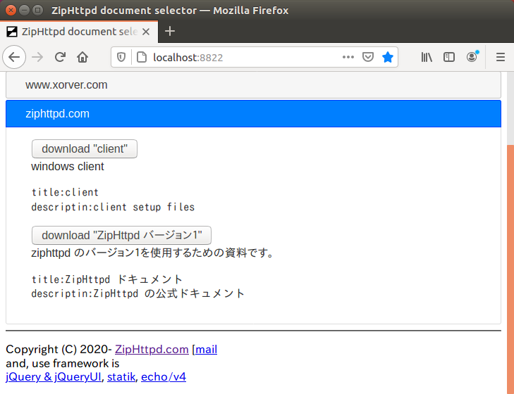

ZipHttpd
ZipHttpd利用ガイド
ここでは Windows での使用方法について解説します。ダウンロード
任意のディレクトリに、配布ページよりダウンロードした zip を展開します。
D:\.ziphttpd>dir /b *.exe
zhsign.exe
zhget.exe
selector.exe
updater.exe
launcher.exe
ziphttpd.exe
使用方法
launcher.exe を起動すると、タスクトレイに アイコンが常駐します。
アイコンを右クリックするとコンテキストメニューが表示されます。
更新 (Update)
Update はドキュメントとプログラムの自動更新を行います。
ドキュメント・ダウンロード選択 (Selector)
これを選択すると Selector ツールが起動します。

Selector は新しくドキュメントを取り込む際に使用します。
リポジトリに公開されているサイトごとにアコーディオンが開けます。
目的のサイトからドキュメントを探して、ボタンを押すとダウンロードします。

その後 Update した際に、最新版が存在していたならば更新を行います。
表示 (Show)
Show は ZipHttpd のトップページを開きます。
アイコンをダブルクリックすることでも同様に開きます。
再起動 (Restart)
Restart は ZipHttpd を再起動します。
手動で docs/ にダウンロードしたドキュメントを認識させる際などに使用します。
終了 (Exit)
Exit は ZipHttpd を終了し、タスクトレイでの常駐を終了します。
プログラム構成
launcher.exe (Windowsのみ)
Windows での ZipHttpd のフロントエンドです。
実行するとタスクトレイに常駐します。
ziphttpd.exe
ZipHttpd の実体です。
タスクトレイに launcher が常駐しアイコンが表示した時には実行されています。
コンテキストメニューから Restart をクリックした時に再起動されます。
updater.exe (Windowsのみ)
zhget.exe を利用してコンパイル済みの実行ファイルとドキュメントを更新します。
コンテキストメニューから Update をクリックした時に実行されます。
launcher.exe 自体も更新対象となっています。
selector.exe
コンテキストメニューから Selector をクリックした時に実行されます。
リポジトリからホスト一覧を得てドキュメントのダウンロード選択を実施します。
実際には zhget.exe のフロントエンドです。
zhget.exe
コンテキストメニューから Update や Selector をクリックした時に実行されます。
ダウンロード指定機能
リポジトリを参照する機能はありませんが、特定のドキュメントを１コマンドでダウンロードします。
更新ダウンロード機能
これを引数無しで実行すると、今までにダウンロードしたドキュメントを再取得します。
zhsign.exe
ドキュメントを開発する際に使用するコマンドラインツールです。